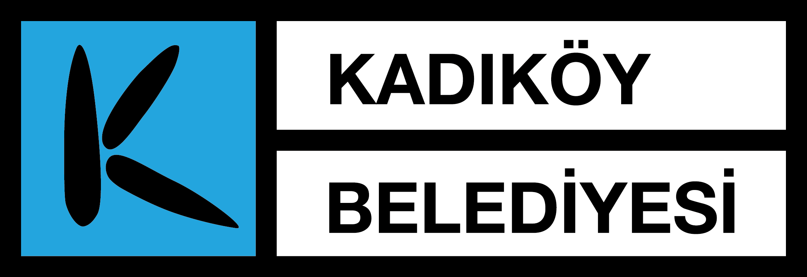

Kadıköy Belediyesi Kütüphaneleri
Ara
Arama Geçmişi
Okuma Listesi
Oturum Aç
TürkçeРусскийEnglish
TürkçeAbhazca Afganca/Peştuca Almanca Altay Türkçesi Altay Türkçesi Amharca Aramice Arapça Arnavutça Avarca Azerice Babilce Bambaraca Baskça Başkurtça Belarusça Bengalce Boşnakça Bulgarca Buryatça Danca Dari-Farsça Endenozyaca Ermenice Esperanto Estonyaca Ethiopic Faroece Farsça Felemenkçe Filipince Fince Fransızca Galiçyaca Gilbertese Guceratça Gürcüce Haiti Hakasça Hausaca Havaice Hintçe Hollandaca Hırvatça Hırvatça Japonca Kabarca Kalmukça Karakalpakça Karamanlıca Karaçay-Balkar Katalanca Kazakça Kmerce Korece Korsikaca Kumuk Kürtçe Kırgızca Latince Lazca Letonyaca Litvanyaca Luo Macarca Madagaskarca Makedonca Malayca Marathice Marice Megrelce Moldavyaca Morece Moğolca Mısırca Nepalce Nijer-Kordofan Norveççe Osmanlıca Polca/Lehçe Portekizce Pume Romani Rumca Rumence Rusça Sabuanca Sami Samoaca Sanskritçe Seylanca Slavca Slovakça Slovence Somalice Svahili Sümerce Süryanice Sırpça Tacikçe Tacikçe Tamilce Tatarca Tayca Tibetçe Tigrinya Tuvaca Türkmence Türkçe Ukraynaca Urduca Uygurca Vietnamca Yakutça Yunanca Zazaca Zaza Zuluca Çağatayca Çekçe Çerkesçe Çevaca Çeçence Çince Çok dilli Çuvaşça Özbekçe İbranice İngilizce İrlandaca İskoçça (Cermen) İskoçça (Kelt) İspanyolca İsveççe İtalyanca İzlandaca Şona Dili
Tüm AlanlardaYazarEser AdıKonuÖz/Özet/İçindekilerDilYayın TarihiYayınlayanYayın YeriSınıflama yer bilgisiISBNDemirbaş
Arama
Alt Biçim:
Siyasi
✕
Bölüm:
Prof. Dr. Cahit Tanyol Koleksiyonu
✕
Dil:
Türkçe
✕
Bulunan
:
51
Adet
0.007 sn
Yayın Geliş TarihiEser AdıYazarYayın TarihiDilYer Numarası
102550100
1
2
...
5
›
Tam metinlerde ara
Bulunduğu Kütüphane/ler
[1]
Kadıköy Belediyesi Tarih Edebiyat ve Sanat Kütüphanesi
51
Bölüm
[1]
Prof. Dr. Cahit Tanyol Koleksiyonu
51
Oda
[1]
üst kat
1
Tür
[1]
Kitap
51
Alt Biçim
[1]
Siyasi
51
Şekil
[1]
Basılı
51
Ortam
[1]
Kağıt
51
Konu
[1]
Biyografi
51
Yazar
[19]
Tanyol, Cahit
2
Altan, Çetin
1
Altuğ, Hikmet
1
Atilhan, Cevat Rifat
1
Bardakçı, Cemal
1
Basmanov, Mikhail
1
Başar, Ahmet Hamdi
1
Belli, Mihri
1
Bouthoul, Gaston
1
Bowle, John
1
Chi-Huei, Huang
1
Demiray, Tahsin
1
Gündem, Mehmet
1
Hayıt, Baymirza
1
Hunca, Adnan
1
Karadağ, Raif
1
Kropotkine
1
Kutay, Cemal
1
Kıvılcımlı, Hikmet
1
Daha fazlası
Daha az
Dil
[1]
Türkçe
51
Yayın Tarihi
[20]
[1997]
1
[1975]
1
2016
1
2014
1
2002
1
2000
1
1998
1
1992
1
1984
10
1983
1
1979
2
1976
3
1975
2
1974
1
1973
1
1972
1
1971
2
1970
1
1969
2
1967
4
Daha fazlası
Daha az
Yayınlayan
[20]
[yay.y.]
10
Yazarlar ve çevirmenler Yayın Üretim Kooperatifi
9
Devrimci Yayınlar Kooperatifi Yayınları
2
Piya Art Yayınları
2
Ürün Yayınları
2
Altınok Matbaası
1
Aykurt Neşriyatı
1
Babacan Yay.
1
Başar Yayınları
1
CHP Araştırma Bürosu
1
Ekonomik ve Sosyal Etüdler Konferans Heyeti
1
Emeğin Partisi
1
Genel-İş
1
Habora Yayınları
1
Havass Yayınları
1
Hunca Yayınları
1
Kule Kitapları
1
Odak Yayınları
1
Sol Yayınları
1
Tarih Bilimi Kitapları
1
Daha fazlası
Daha az
Kitap [Siyasi]
Komünist propaganda taktikleri / Suzanne Labin
Labin, Suzanne
1972
Kitap [Siyasi]
Emeğin Partisi 1. genel kongresi belgeleri : 14 Eylül 1997
[1997]
Kitap [Siyasi]
Dev Rus II.Büyük Petro : Staline / Robert ve Jean Ligny Vaucher; çev.: Karaman-Sami Sabit
Vaucher, Robert ve Jean Ligny
1944
Kitap [Siyasi]
Komünizm ve Türk dünyası / Baymirza Hayıt
Hayıt, Baymirza
1971
Kitap [Siyasi]
İslamiyet ve sosyalizm / Cahit Tanyol; tek. haz.: Mehmet Kaya
Tanyol, Cahit
2016
Kitap [Siyasi]
Maoizm ve gençlik hareketi / A. Yelnikov, V. Turusov ; çev.: H. Işık
Yelnikov, A.
1976
Kitap [Siyasi]
Troçkistler gençliği nereye götürüyor / Mikhail Basmanov; çev.: Aptullah Seçen
Basmanov, Mikhail
1975
Kitap [Siyasi]
Memleketim ve dünya / Andrei Sakharov; çev. : Ferda Koray
Sakharov, Andrei
1976
Kitap [Siyasi]
Dünyayı saran tehlike / Aclan Sayılgan
Sayılgan, Aclan
1973
Kitap [Siyasi]
Sovyetler Birliği'nde İslam / Abdullah Vakhabav
Vakhabav, Abdullah
1979
Kitap [Siyasi]
Şehirlere akın ve mesken davası : nüfua artışının doğrduğu bazı sosyal ve ekonomik meseleler
1959
Kitap [Siyasi]
Soljenitsin ve batı / Aleksandr Isaeviç Soljenitsin; derl. Ferda Koray
Soljenitsin, Aleksandr Isaeviç
1976
1
2
...
5
›
6698 sayılı Kişisel Verilerin Korunması Kanunu kapsamında yükümlülüklerimiz ve çerez politikamız hakkında bilgi sahibi olmak için alttaki bağlantıyı kullanabilirsiniz.
Tamam
Çerez Politikamız